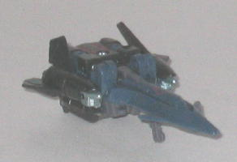
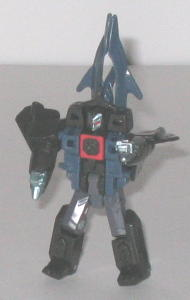
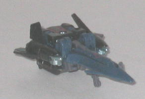
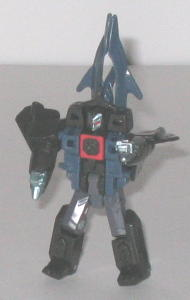
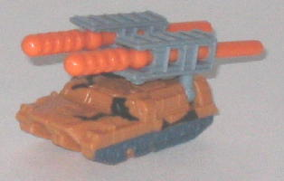
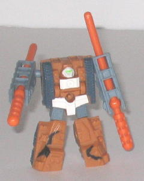

Shockwave
Shockwave
 
Allegiance : Decepticon, Minicon
Difficulty of Transformation : Easy
Color Scheme : Charcoal black, dark dull purplish blue, dark gray, and some metallic bluish silver and red
Individual Rating : 8.0
Shockwave
vs. Tankor
Size
: Mini-Con (2-pack)
Overall Rating
: 7.3
 Shockwave
Shockwave


Allegiance
: Decepticon, Minicon
Difficulty of Transformation
: Easy
Color Scheme
: Charcoal black, dark
dull purplish blue, dark gray, and some metallic bluish silver and red
Individual Rating
: 8.0
(NOTE: Because this toy is a repaint, this is not a full-blown review. This mainly covers any changes made to the toy and the color scheme, and merely compares it to Armada Terradive. For a review on the mold itself, read the review of Armada Terradive here .)
Shockwave is not just
the first, but the SECOND repaint of Armada Terradive to look almost exactly
like the original version of the mold. C'mon, we already get lazy repaints
for many of the store exclusives, now we have to deal with a few in the
main line, too? Shockwave does share a few differences from Armada Terradive,
but they are pretty minor-- namely, his gray is a bit darker, his purple
is of a duller shade, his black is more of an "off-black" and the chest,
cockpit, and arm paint apps have been changed a bit in their placement
and/or color. It's a good color scheme, but a very lazy repaint-- and Armada
Terradive carries off the same color scheme a little better, anyways. (On
a positive note, though, nice to see Hasbro has reacquired the Shockwave
name.)
No mold changes have
been made to Shockwave, though he now sports a silver Decepticon symbol
on his left rear wing.
 Tankor
Tankor


Allegiance
: Autobot, Minicon
Difficulty of Transformation
: Very
Easy
Color Scheme
: Dull tannish orange,
dull bluish gray, and some orange, very dark bluish gray, black, light
lime green, and pasty white
Individual Rating
: 6.6
(NOTE: Because this toy is a repaint, this is not a full-blown review. This mainly covers any changes made to the toy and the color scheme, and merely compares it to Armada Wreckage. For a review on the mold itself, read the review of Armada Wreckage here .)
Tankor has a pretty appropriate
color scheme for a rough-'n-tough vehicle like a mobile missile launcher.
The dull orange and gray work pretty well together and, with the black
stripe paint apps added to the top of the vehicle mode, give Tankor a fairly
good "desert camo" feel. The onyl problem I have with him when it comes
to his color scheme is the white used in robot mode-- it doesn't fit in
with the "desert" look given to the rest of him and seems a little out
of place, though at least it doesn't outright clash with its surrounding
colors. The windows in his vehicle mode also need some paint apps to bring
them out more, though otherwise Tankor has a decent amount of paint apps.
No mold changes have
been made to Tankor, though an Autobot symbol has been added to the left
side of the rear of his vehicle mode.
Shockwave vs. Tankor
is a rather cool Minicon set, IF you don't have any previous versions of
the Terradive mold. Shockwave is just way too similar to his predecessor
to justify the purchase if you have Terradive (unless you're a completist,
of course). Tankor has a pretty cool desert-ish color scheme, and I'd rate
him above the mold's color scheme as
Fetch
,
but below the color scheme used on the mold as Wreckage.
Review by Beastbot